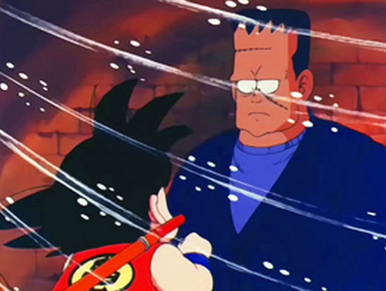
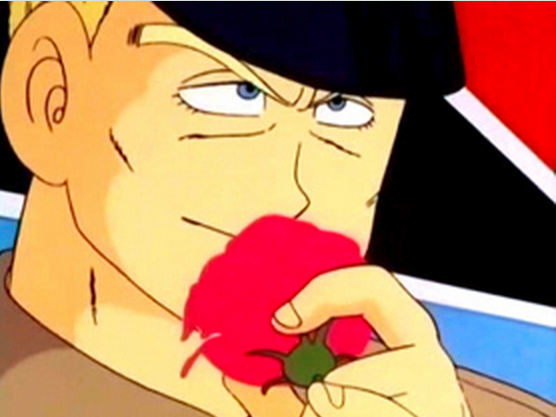
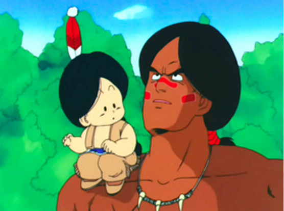
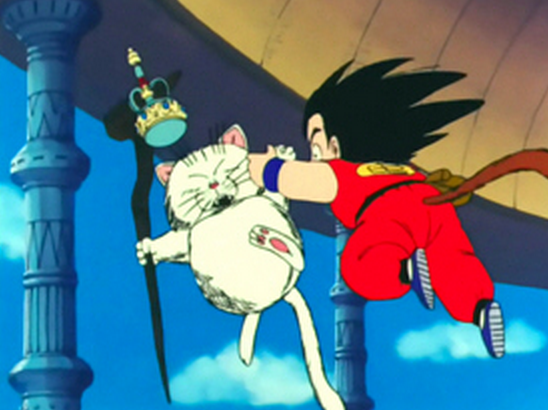
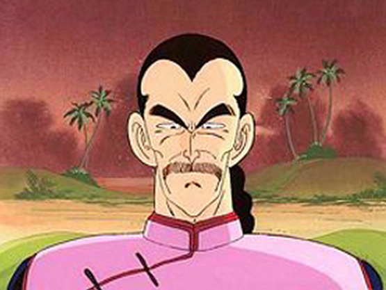
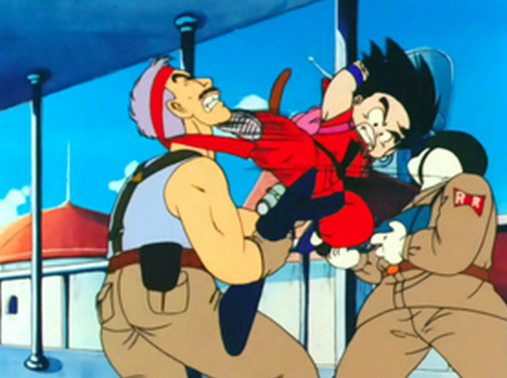
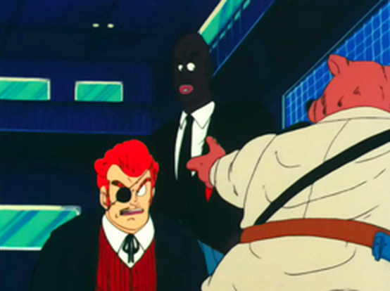
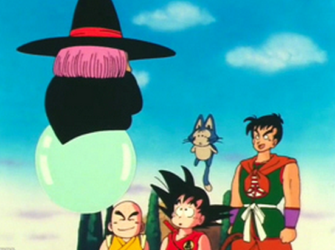

Goku va a buscar la bola de quatre estrelles en forma d'entrenament (la que tenia inicialment en trobar la Bulma i que per ell té un gran valor sentimental, ja que és un legat del seu avi mort). En la seva recerca de la Bola de Drac es topa contra l'exèrcit de la Cinta Vermella, que també està buscant les boles de drac per als seus propis plans. Un dels seus generals li roba la bola de drac i en Goku tot perseguint-lo acaba a una de les fortaleses del exèrcit de la cinta vermella, consistent en una gran torre amb diferents nivells d'alçada , i s'enfronta a diferents reptes i rivals a cada un d'aquests nivells, lluitant contra un androide, un monstre, superant un laberint, i també contra un ninja nomenat Murassaki, En Goku sortosament fa un amic en aquesta torre, un androide pacifista de nom Super 8, Finalment en Goku arriba al nivell final de la torre, on l'espera un dels generals del exèrcit de la cinta vermella, el General White, i el venç.
|  |  |
Però el radar es trenca i Goku acudeix novament a la Bulma perquè li arregli. Junts parteixen a buscar la següent bola de drac, que està prop de casa d'en Follet tortuga, i passant per allà se'ls uneix en Krilin . Topen però amb un altre general del exèrcit de la cinta vermella, el General Blue, el qual a més de malvat (i homosexual) té uan gran força i poders psíquics capaços de immobilitzar al contrincant. En Blue els persegueix per una cova pirata submarina, on s'amagava una altre bola de drac. Després de quasi matar a en Goku en Blue perd i fuig robant-li però el radar per trobar boles de drac a en Goku. Aquest el persegueix fins a la Vil·la del Pingüi on en Goku es troba amb l'Arale (l'altre gran personatge de manga creat per l'Akira Toriyama abans de crear la sèrie de Bola de Drac). L'Arale venç al General Blue, engegant-lo a fer punyetes al desert d'Egipte.
|  |  |
Després Goku es dirigeix tot sol a cercar més boles de drac. Anant a parar a la torre Sagrada, una llarga columna que s'alça cap al cel fins a perdre's de la vista. Allà a peu de la torre es troba amb un indi anomenat Bora que vigila la torre sagrada i també amb el fill d'aquest indi, el Upa. Li expliquen la llegenda de la torre sagrada segons la qual qui aconsegueix escalar a dalt de tot podrà beure la màgica aigua sagrada que fa més fort. Molts ho han intentat sense èxit. Inesperadament apareix al peu de la torre sagrada un mercenari contractat per la cinta vermella per eliminar-lo, anomenat Tao Pai Pai. Aquest venç a en Goku, i marxa donant-lo per mort quan afortunadament en Goku encara segueix inconscient però viu gràcies a que la bola de drac que porta a sobre i para en part el atac mortal llençat contra ell. En Tao Pai Pai també assessina a Bora. En Goku al recuperar la consciència promet a Upa que quan recuperi totes les boles de drac li demanarà al Drac Xeron que ressuciti al seu pare Bora. Així doncs en Goku s'enfila a la torre sagrada amb l'esperança de beure l'aigua sagrada i tornarse prou fort com per poder vèncer a en Tao Pai Pai. Quan en Goku finalment aconsegueix pujar a dalt de la torre, s'hi troba un estrany personatge, el Mixet Murri , un gat guardià de l'aigua sagrada. Aquest li diu que tan sols la podrà beure si aconsegueix pendre-li a ell. Tmabé li diu que en Follet tortuga en el passat també havia pujat a la torre sagrada i havia aconseguit beure'n l'aigua, després de intentar pendre-li durant tres anys. En Goku tarda finalment tres dies a conseguirla. Un cop la obté en Mixet Murri li diu que de fet és aigua normal i corrent, i que el que fa tornar més fort és realment el entrenament consistent en intentar pendre-li. Així que en Goku finalment baixa de la torre sagrada i s'enfrenta novament a en Tao Pai Pai, vencent-lo en aquesta ocasió. Després en Goku parteix cap al cuartell general de l'exercit de la cinta vermella. I ell tot sol aconsegueix vence'l i recuperar les restants boles de drac.
|  |  |
No obstant descobreix que segueix faltant una bola de drac per reunir totes set i poder ressusitar al pare del Upa, però malgrat tot al radar no surt enlloc. Desesperat torna a acuidr a la Bulma i al Follet tortuga en cerca de consell, pensant que el radar s'ha espatllat. Però la Bulma li diu que el radar funciona bé. Aleshores el Follet tortuga proposa visitar una famosa vident, anomenada Baba (i que resulta precisament la germana d'en Follet tortuga). La Baba és capaç de trobar qualsevol objecte perdut mitjançant els seus poders màgics. Així que tots els companys: En Goku, Yamxa , Follet tortuga, Krilin , Ulong, Bulma i fins i tot el Upa, acudeixen a visitar la Baba . La qual els diu que per cercar la bola de drac li han de pagar un munt de diners (que no tenen), o en cas contrari si vencen als seus cinc mercenarisen combat també els hi concedirà els seus serveis. Així que tots els companys accedeixen a lluitar, contra uns rivals del més estrafolari i cada rival cada vegada més fort que l'anterior: un vampir, un home invisible, una mòmia , el diable i un contrincant final misteriós que porta una màscara. Els companys van caixent lentament derrotats contra els rivals. I finalment és en Goku qui consegueix derrotar a la mòmia i al diable. Aquest últim mai havia estat derrotat en combat, donat que posseix un atac místic especial consistent en ampliar el mal del contrincant, per petit que sigui, i fer-lo créixer fins a fer explotar el cos. No obstant en Goku resulta ser purament bondadós, amb lo qual resulta immune al atac. El rival final emmascarat sembla conèixre els punts febles d'en Goku i quasi el venç en un combat molt igualat. Però finalment el emmascarat es rendeix i es treu la màscara, resulta ser el difunt avi d'en Goku, el nom Son Gohan, torna del món dels morts especialment lluitar contra el seu nét.
|  |  |
Després de tot aquests combats la Baba accedeix a buscar amb els seus poders màgics la Bola de Drac perduda. Aquesta resulta estar en una caixa especial dissenyada perquè el radar no pugui detectar, i en poder d'en Pilaf, que ja en el passat havia intentat robar les boles de Drac a en Goku i la Bulma. Tot i que en Pilaf utilitza un poderós androide per lluitar contra en Goku, aquest el venç i recupera la bola de drac. Cridant així el Drac Sheron i ressuscitant al indi Bora, el pare del Upa. Un cop demanat el desig, el Goku viu algunes petites aventures més, entrenant-se pel següent torneig mundial d'arts marcials. En aquestes aventures coincideix amb dos lluitadors forts i malvats: Ten Xin Han i el petit Xaos.